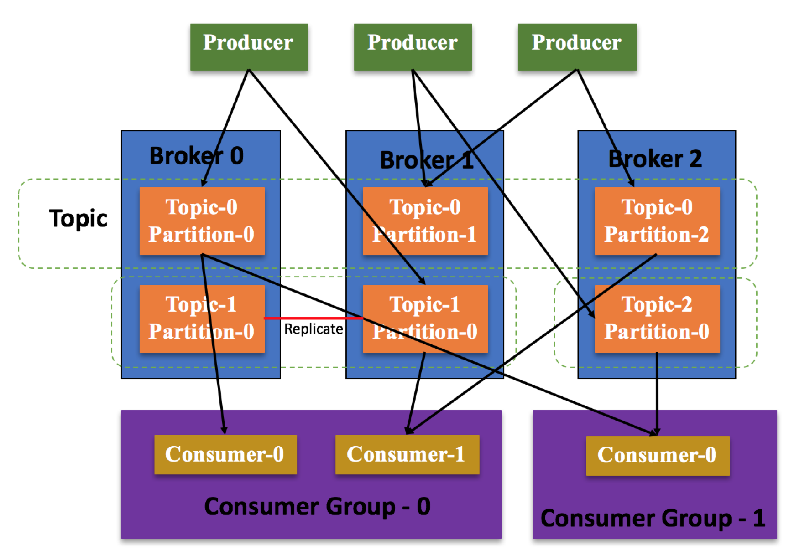

- 00 开篇词 四纵四横，带你透彻理解分布式技术.md.html
- 01 分布式缘何而起：从单兵，到游击队，到集团军.md.html
- 02 分布式系统的指标：啥是分布式的三围.md.html
- 03 分布式互斥：有你没我，有我没你.md.html
- 04 分布式选举：国不可一日无君.md.html
- 05 分布式共识：存异求同.md.html
- 06 分布式事务：All or nothing.md.html
- 07 分布式锁：关键重地，非请勿入.md.html
- 08 分布式技术是如何引爆人工智能的？.md.html
- 09 分布式体系结构之集中式结构：一人在上，万人在下.md.html
- 10 分布式体系结构之非集中式结构：众生平等.md.html
- 11 分布式调度架构之单体调度：物质文明、精神文明一手抓.md.html
- 12 分布式调度架构之两层调度：物质文明、精神文明两手抓.md.html
- 13 分布式调度架构之共享状态调度：物质文明、精神文明多手协商抓.md.html
- 14 答疑篇：分布式事务与分布式锁相关问题.md.html
- 15 分布式计算模式之MR：一门同流合污的艺术.md.html
- 16 分布式计算模式之Stream：一门背锅的艺术.md.html
- 17 分布式计算模式之Actor：一门甩锅的艺术.md.html
- 18 分布式计算模式之流水线：你方唱罢我登场.md.html
- 19 分布式通信之远程调用：我是你的千里眼.md.html
- 20 分布式通信之发布订阅：送货上门.md.html
- 21 分布式通信之消息队列：货物自取.md.html
- 22 答疑篇：分布式体系架构与分布式计算相关问题.md.html
- 23 CAP理论：这顶帽子我不想要.md.html
- 24 分布式数据存储系统之三要素：顾客、导购与货架.md.html
- 25 数据分布方式之哈希与一致性哈希：“掐指一算”与“掐指两算”的事.md.html
- 26 分布式数据复制技术：分身有术.md.html
- 27 分布式数据之缓存技术：“身手钥钱”随身带.md.html
- 28 分布式高可靠之负载均衡：不患寡，而患不均.md.html
- 29 分布式高可靠之流量控制：大禹治水，在疏不在堵.md.html
- 30 分布式高可用之故障隔离：当断不断，反受其乱.md.html
- 31 分布式高可用之故障恢复：知错能改，善莫大焉.md.html
- 32 答疑篇：如何判断并解决网络分区问题？.md.html
- 33 知识串联：以购买火车票的流程串联分布式核心技术.md.html
- 34 搭建一个分布式实验环境：纸上得来终觉浅，绝知此事要躬行.md.html
- 特别放送 Jackey：寄语天涯客，轻寒底用愁.md.html
- 特别放送 分布式下的一致性杂谈.md.html
- 特别放送 崔新：追根溯源，拨开云雾见青天.md.html
- 特别放送 徐志强：学习这件事儿，不到长城非好汉.md.html
- 特别放送 那些你不能错过的分布式系统论文.md.html
- 结束语 为什么说提升职业竞争力要从尊重、诚实开始？.md.html
- 捐赠
20 分布式通信之发布订阅：送货上门
你好，我是聂鹏程。今天，我来继续带你打卡分布式核心技术。
在上一篇文章中，我带你一起学习了分布式通信中的远程调用。远程调用的核心是在网络服务层封装了通信协议、序列化、传输等操作，让用户调用远程服务如同进行本地调用一样。
其实，这种方式就是通过网络服务层的封装实现了不同机器上不同进程之间的直接通信，因为是直接通信，所以通过线程阻塞的方式实现同步调用比较容易，因此通常被用于同步调用。比如，机器1上的进程A调用机器2上的进程B，进程A被挂起，进程B开始执行，当进程B将值返回给A时，A继续执行。
虽然这种方式也可以用于异步通信，但因为进程之间是直接交互的，所以当进程比较多时，会导致进程维护通信的复杂度非常高，且一个进程通信接口改变，与其通信的进程都会受到影响。
随着业务和分布式计算规模的逐渐增大和复杂化，远程调用模型有点心有余力而不足了，为此出现了专门的异步通信模式，也就是消息发布订阅模式和消息队列模式。在接下来的两篇文章中，我将与你详细讲述这两种通信模式。
话不多说，今天，我就带你一起打卡分布式通信中的发布订阅模式吧。
什么是发布订阅？
其实，发布订阅的思想在我们的生活中随处可见。
比如，学术届电子论文的订阅方式。通常，各个会议方或出版社会将学术论文发布到论文网站（或平台上，比如ACM、知网等），然后学生或老师向论文网站订阅自己感兴趣的论文，比如分布式相关的、AI相关的等。
当会议方或出版社将论文发布到论文网站后，论文网站会根据订阅信息，将相应的论文推送给订阅者（比如通过邮件的方式）。这里的会议方或出版社就相当于生产者，负责发布论文，学生或老师就相当于消费者，而论文网站就相当于一个消息中心。
由此可以看出，发布订阅的三要素是生产者、消费者和消息中心，生产者负责产生数据放到消息中心，消费者向消息中心订阅自己感兴趣的消息，当发布者推送数据到消息中心后，消息中心根据消费者订阅情况将相关数据推送给对应的订阅者。这种将数据送到消费者手里的行为，是不是和我们现在常说的“送货上门”一样呢？
发布订阅的原理及应用
这个论文订阅的例子，充分体现了发布订阅的思想。接下来，我就与你进一步分析下发布订阅的原理吧。
发布订阅的基本工作原理
在分布式通信领域中，消息系统一般有两种典型的模式。一种是点对点模式（P2P，Point to Point），另一种是发布订阅模式（Pub/Sub，Publish/Subscribe）。接下来，我们就一起看看这两种模式，以帮助你深入理解发布订阅模式的原理。
首先，我们一起看一下什么是点对点模式。
生产者将消息发送到消息中心，然后消费者从消息中心取出对应的消息进行消费。消息被消费后，消息中心不再存储该消息，因此其他消费者无法再消费该消息。也就是说，点对点模式虽然支持多个消费者，但一个消息只能被一个消费者消费，不允许重复消费。
这种模式就好比，限定了每篇论文只能被一个用户消费，比如现在有一篇分布式相关的论文，这篇论文推送给学生A之后，论文网站就必须将其删除或下架，也就是说其他用户无法再获取或阅读该论文了。（当然实际情况并不是这样的，这里只是为了方便你理解，我做了相应的假设。）
接下来，我们看一下发布订阅模式。
生产者可以发送消息到消息中心，而消息中心通常以主题（Topic）进行划分，每条消息都会有相应的主题，消息会被存储到自己所属的主题中，订阅该主题的所有消费者均可获得该消息进行消费。
比如图中假设生产者1发布一个Topic相关数据或消息，消费者1～3均订阅了该Topic消息，则该消息会推送消费者1～3，也就是说同一个消息被3个消费者消费了。
这种模式就好比，不同的方向代表不同的主题，比如分布式领域代表一个主题，当会议方或出版社发布分布式相关的论文时，该论文会被存储到论文网站的分布式主题下，同时学生或老师也会根据自己感兴趣的主题进行订阅。如果学生A订阅了分布式主题，那么当会议方或出版社发布分布式相关的论文后，会议网站会将这些论文推送给学生A。
与点对点模式相比，发布订阅模式中一个消息可以被多个消费者进行消费，这也是和点对点模式的本质区别。
以上就是发布订阅中的两种典型模式了。
在分布式系统中，通常会为多用户服务，而多个用户通常会关注相同类型的消息，因此发布订阅模式在分布式系统中非常常见。接下来，我再结合经典的分布式发布订阅消息系统Kafka的发布订阅原理及工作机制，来帮助你巩固对发布订阅的理解。
Kafka发布订阅原理及工作机制
Kafka是一种典型的发布订阅消息系统，其系统架构也是包括生产者、消费者和消息中心三部分。
- 生产者（Producer）负责发布消息到消息中心，比如电子论文的会议方或出版社；
- 消费者（Consumer）向消息中心订阅自己感兴趣的消息，获得数据后进行数据处理，比如订阅电子论文的老师或学生；
- 消息中心（Broker）负责存储生产者发布的消息和管理消费者订阅信息，根据消费者订阅信息，将消息推送给消费者，比如论文网站。在Kafka中，消息中心本质上就是一组服务器，也可以说是Kafka集群。
Kafka的架构图，如下所示：
可以看到，Kafka中除了Producer、Broker、Consumer之外，还有一个ZooKeeper集群。Zookeeper集群用来协调和管理Broker和Consumer，实现了Broker和Consumer的解耦，并为系统提供可靠性保证。
ZooKeeper集群可以看作是一个提供了分布式服务协同能力的第三方组件，Consumer和Broker启动时均会向ZooKeeper进行注册，由ZooKeeper进行统一管理和协调。
ZooKeeper中会存储一些元数据信息，比如对于Broker，会存储主题对应哪些分区（Partition），每个分区的存储位置等；对于Consumer，会存储消费组（Consumer Group）中包含哪些Consumer，每个Consumer会负责消费哪些分区等。
接下来，我们看看分区和消费组的原理和作用吧。
从上面的介绍可以看出，Broker负责存储消息数据，Consumer负责消费数据，Consumer消费数据的能力会影响Broker数据存储是否溢出的问题。若Consumer消费太慢，会导致Broker存储溢出，Broker就会丢弃一部分消息。
因此，Broker和Consumer是Kafka的核心。接下来，我将带你进一步了解Kafka中Broker和Consumer的关键技术，如下图所示：

首先，我们看一下Broker。
在Kafka中，为了解决消息存储的负载均衡和系统可靠性问题，所以引入了主题和分区的概念。其中，主题是一个逻辑概念，指的是消息类型或数据类型，就好比电子论文案例所讲的分布式是一个主题。
而分区是针对主题而言的，指的是一个主题的内容可以被划分成多个集合，分布在不同的Broker上，不同的Broker在不同的节点上。这里的集合就是分区，其中同一个分区只属于一个Broker。
那么，分区有什么好处呢？
在我看来，分区的好处主要包括如下两点：
- 实现负载均衡，避免单个Broker上的负载过高。比如，Topic 0被分为Partiton-0、Partiton-1和Partiton-2三个分区，分别分布在Broker 0、Broker 1和Broker 2上。这，就使得Topic 0的消息可以分布在这3个分区中，实现负载均衡。
- 实现消息的备份，从而保证系统的高可靠。比如，Topic 1包含两个分区Partiton-0、Partiton-1，每个分区内容一致，分别存储在Broker 0和Broker 1上，借此实现了数据备份。
接下来，我们再看看Consumer吧。
Kafka中的消费组，指的是多个消费者的一个集合。一个消费组中的消费者共同消费主题消息，并且主题中每个消息只可以由消费组中的某一个消费者进行消费。
引入消费组的目的是什么呢？我们知道，在消息过多的情况下，单个消费者消费能力有限时，会导致消费效率过低，从而导致Broker存储溢出，丢弃一部分消息。Kafka为了解决这个问题，所以引入了消费组。
这样一来，我们对发布订阅的基本工作机制就比较清楚了。接下来，我们再结合电商购物平台的例子，来看看发布订阅技术的具体应用吧。
发布订阅实践应用
假设在电商购物平台（为了方便理解，我对电商购物平台做了一定的简化）中，用户首先在订单系统下单，下单后库存系统会进行出货，通知系统则负责通知用户，整个流程可以用发布订阅的模式进行，如下图所示：
- 订单系统对应发布订阅模式中的生产者，消息中心有个主题专门存放下单信息，每次用户下单后，订单系统会向该主题写入数据；
- 库存系统和通知系统对应发布订阅模式中的消费者，它们会向消息中心订阅下单信息相关的主题；
- 订单系统向消息中心发布订单信息后，库存系统和通知系统都会获取到相应的下单信息，然后进行各自后续的操作，即库存系统进行出货，通知系统通过短信或邮件等方式通知用户。
接下来，我们总结下发布订阅模式的关键特征吧。
- 实现了系统解耦，易于维护。生产者/发布者只负责消息的发布，不需要知道订阅者/消费者的数量，也不需要知道订阅者/消费者获取消息用来做什么，而订阅者/消费者也不需要知道什么时候生产者/发布者会发布消息。
所以，生产者/发布者和订阅者/消费者互相独立，进而实现了系统解耦，每个部分可以单独维护，减少了因为生产者和消费者的耦合引入的一些相互影响。比如，如果两者耦合在一起，当生产者逻辑更改需要修改代码时，消费者部分的代码也受影响，因此每个部分单独维护降低了维护的复杂度。
- 实现了异步执行，避免高负载。生产者/发布者发布消息到消息中心，当消息超过消息中心可以存储的容量后，消息中心会丢弃掉超出的消息，这样系统就不会因为消息数量多而导致系统故障。
知识扩展：观察者模式和发布订阅模式的区别是什么？
我们还经常会听到一个概念，叫作观察者模式，也会在分布式系统中都会经常用到。那么，观察者模式和发布订阅模式的区别到底是什么呢？
首先，我们看一下观察者模式。顾名思义，观察者模式下有观察者，那么就有被观察者，两者之间的关系是什么呢？
观察者负责监控被观察者的状态变更，如果被观察者的状态发生了改变，那么观察者根据状态的变更执行相关操作。举个例子，现在进程A是被观察者，进程B和进程C是观察者，当进程B观察到进程A中变量X由3变为4时，执行X+1的操作；当进程C观察到进程A中变量X由3变为4时，执行X-1的操作。也就是说，观察者模式，定义了被观察者与观察者的直接交互或通信关系。
接下来，我们看一下发布订阅模式。发布订阅模式中存在发布者、订阅者和消息中心，订阅者需要向消息中心指定自己对哪些数据感兴趣，发布者推送的数据放入消息中心后，消息中心根据订阅者订阅信息推送数据。也就是说，发布者和订阅者之间引入了消息中心，实现的是间接通信。
总结来讲，观察者模式采用了直接通信，观察者和被观察者通信时延会低一些，但它们的依赖关系比较强，不管是被观察者还是观察者逻辑或接口有更改，另外一个均会受影响。而发布者和订阅者模式采用间接通信，引入了消息中心，相对比较厚重，且通信时延相对会高一点，但实现了订阅者与发布者的解耦。
总结
我首先通过论文订阅的案例，与你介绍了什么是发布订阅以及发布订阅的基本原理，然后介绍了一个经典的分布式发布订阅消息系统Kafka，最后以一个电商购物平台的案例描述了发布订阅模式的应用场景。
我再和你总结下今天的核心知识点吧。
- 发布订阅就是生产者产生消息发布到消息中心，消费者订阅自己感兴趣的消息，消息中心根据消费者的订阅情况将相关消息发给对应的消费者。
- Kafka是一个经典的发布订阅消息系统，采用多分区实现了消息备份、负载均衡，并引入消费组提高了消费者的消费能力，防止Broker因为存储资源不够丢弃消息的情况，从而提高了Kafka系统的可靠性。
- 发布订阅模式可以使系统松耦合易于维护，也可异步执行解决高负载问题，适用于系统解耦、流量削峰等场景。
最后，我再通过一张思维导图梳理下今天的核心知识点，以帮助你理解与记忆。
发布订阅模式易于理解，与点对点模式很类似。不同的是，点对点模式中一个消息只能由一个消费者消费，而发布者订阅者模式中一个消息可以由多个消费者消费。
不同的通信模式适用于不同的分布式场景，其中发布订阅模式适合具备多个生产者、多个消费者且异步处理的场景，比如现在的视频App，多个用户都可以通过同一款App看同一部电视剧，当然这个电视剧可以是被不同的生产者发布。点对点模式由于其局限性，一般适用于需要进行点对点通信的场景，比如近场投屏等。
相信你通过本讲的学习后，可以针对不同的分布式场景选择合适的通信模式，加油！
思考题
发布订阅模式下，当发布者消息量很大时，单个订阅者的处理能力是有限的，那么能否实现订阅者负载均衡消费呢？又该如何实现呢？
我是聂鹏程，感谢你的收听，欢迎你在评论区给我留言分享你的观点，也欢迎你把这篇文章分享给更多的朋友一起阅读。我们下期再会！
© 2019 - 2023 Liangliang Lee. Powered by gin and hexo-theme-book.